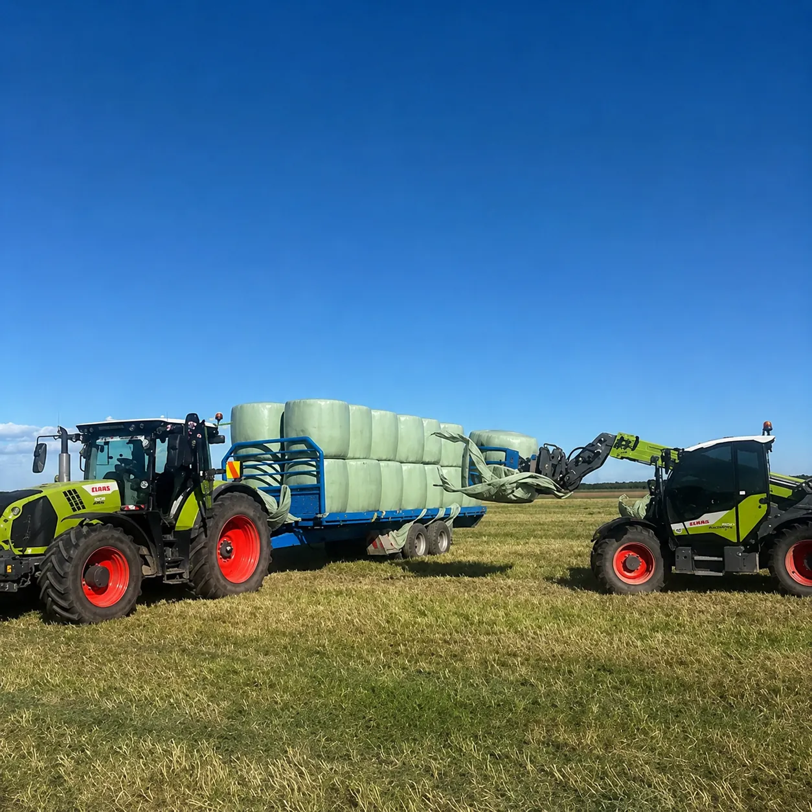

Grass Balage
Full-service mowing, raking and baling. Tight, well-wrapped balage that holds its feed value through winter.
- One crew handles the whole chain: mow, rake, bale, wrap and stack.
- We bale when the moisture is right, not when the calendar says so.
- Logan runs the baling team, so the same eye checks every wrap.
Book early for the first cut, or ring mid-season to top up the stack before winter.